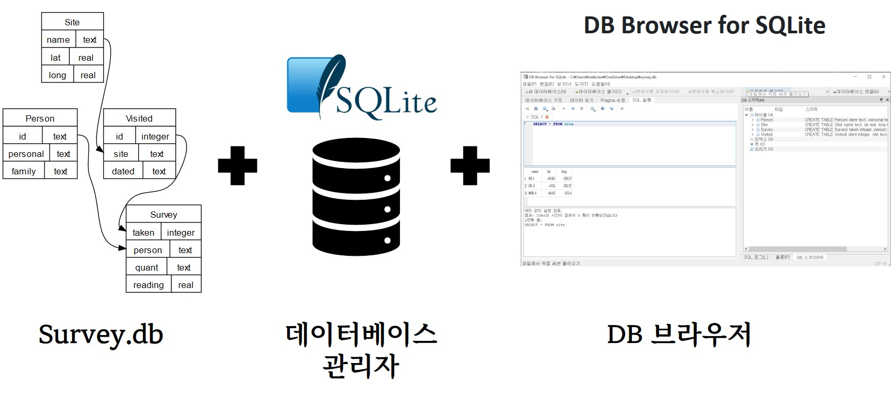
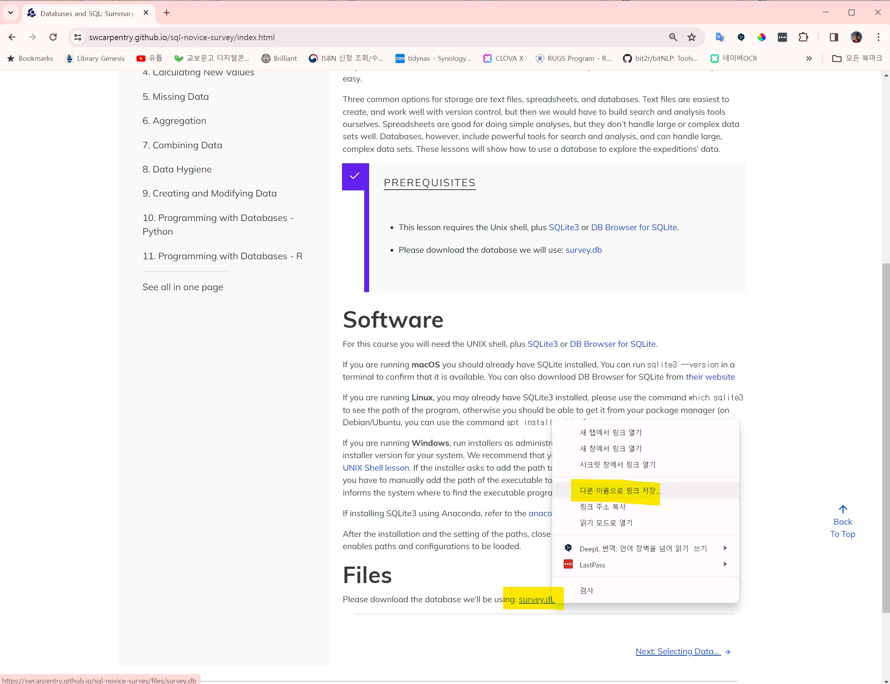
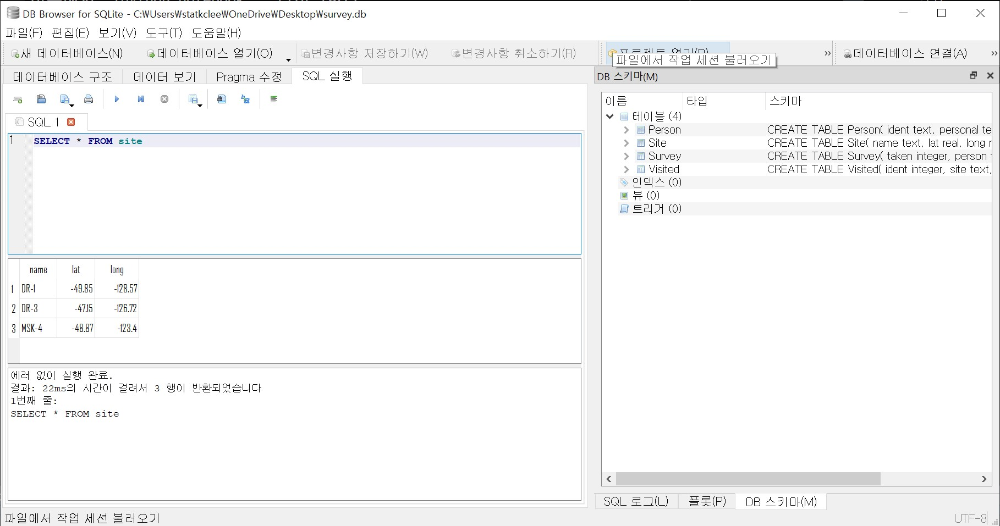

3 실습환경 설정
Survey 데이터베이스(survey.db)는 기본 데이터 분석을 위한 실제 데이터셋을 제공하며, SQLite3는 이 데이터를 저장하고 조작하는 데 사용되는 경량 데이터베이스 엔진으로 데이터베이스 관리자 역할을 수행하나. SQLite용 DB 브라우저는 이러한 SQLite 데이터베이스를 시각적으로 탐색하고, 쿼리를 실행하며, 데이터를 편집하는 데 유용한 도구이다. 이 세 가지 요소는 함께 데이터베이스 분석에 필요한 실질적인 환경과 도구를 제공한다.

SQLite3는 SQLite 데이터베이스 엔진 버전 3을 나타내는 것으로, 가볍고 독립적인, 구성이 단순한 데이터베이스 엔진이다. 서버를 필요로 하지 않는 서버-리스(serverless) 데이터베이스로서, 전체 데이터베이스를 디스크 파일 하나에 저장하기 때문에, SQLite3는 설정이 간단하며, 관리가 쉽고, 플랫폼 간 이동성이 높다.
- 경량성과 효율성: SQLite3는 매우 작은 메모리와 디스크 공간을 사용하면서도 빠른 처리 속도를 제공한다.
- 자체 포함성: 별도 서버 프로세스 없이 실행되며, 설치가 필요 없고 최소한의 지원으로 동작한다.
- 설정 필요없음: SQLite3 데이터베이스는 설정이나 관리가 거의 필요 없으며, 즉시 사용할 수 있다.
- 플랫폼 독립성: 다양한 운영 체제와 잘 호환되며, 데이터베이스 파일은 시스템 간 이동이 가능하다.
- 신뢰성과 내구성: SQLite3는 ACID(Atomicity, Consistency, Isolation, Durability) 거래 속성을 지원하여 데이터 무결성을 보장한다.
SQLite3는 임베디드 시스템, 모바일 애플리케이션, 소규모 웹 프로젝트 등 다양한 분야에서 널리 사용되지만, 대규모, 고부하 멀티유저 데이터베이스 시스템에는 적합하지 않다.
3.1 SQLite 설치
명령-라인(command-line)을 통해 디렉토리를 이동하고 명령문을 실행하는 방법을 알고 있어야만 이후 학습내용을 빠르게 습득할 수 있다. 명령-라인, 콘솔, 쉘 등 주제가 낯설다면 챗GPT 유닉스 쉘(Unix Shell) 학습 자료를 확인해보길 권한다.
데이터베이스와 SQL을 본격적으로 학습하기 전에, SQLite3를 설치해야 한다. SQLite3를 설치하는 방법은 운영 체제에 따라 차이가 난다.
3.1.1 윈도우즈 SQLite3 설치
- SQLite 다운로드: SQLite 공식 웹사이트(https://www.sqlite.org/download.html)에서 Windows용 바이너리 파일을 다운로드한다.
- 압축 해제: 다운로드한 파일을 압축 해제한다.
- 시스템 환경 변수 설정: 압축 해제한 SQLite 실행 파일의 경로를 시스템 환경 변수에 추가하여 명령 프롬프트에서 어디서나 SQLite를 실행할 수 있도록 설정한다.
3.1.2 맥OS SQLite3 설치
맥OS에는 기본적으로 SQLite3가 설치되어 있지만, 최신 버전을 사용하고 싶다면, 다음 방법을 실행한다.
- Homebrew 설치: Homebrew가 설치되어 있지 않다면, 터미널에서
/bin/bash -c "$(curl -fsSL https://raw.githubusercontent.com/Homebrew/install/HEAD/install.sh)"명령을 실행하여 설치한다. - SQLite 설치: 터미널에서
brew install sqlite3명령을 실행하여 SQLite를 설치한다.
3.1.3 리눅스 SQLite3 설치
리눅스 배포판 대부분에는 SQLite3가 이미 설치되어 있다. 만약 설치되어 있지 않거나 최신 버전을 설치하고 싶다면, 다음 방법을 사용하여 설치한다.
- 패키지 관리자 설치: 리눅스 배포판 대부분에는 패키지 관지라를 제공하기 때문에, 우분투(Ubuntu)와 같은 데비안(Debian) 기반 시스템에서는
sudo apt-get install sqlite3명령을 사용하고, 페도라(Fedora)와 같은 RPM 기반 시스템에서는sudo yum install sqlite명령으로 설치한다.
3.1.4 설치 확인
설치가 완료되면, 명령 프롬프트나 터미널에서 sqlite3 --version 명령을 실행하여 설치된 SQLite의 버전을 확인할 수 있다.
$ sqlite3 --version
3.40.1 2022-12-28 14:03:47 df5c253c0b3dd24916e4ec7cf77d3db5294cc9fd45ae7b9c5e82ad8197f38a24윈도우 환경에서 SQLite 다운로드한 후에, 압축을 풀면 몇개 .exe 파일이 존재하는데 설치가 완료되었다. 뭔가 복잡하고 대단한 것을 기대했을 수도 있지만 이러한 단순함이 SQLite의 장점이다.
$ ls
gen-survey-database.sql sqlite3.exe survey.db
sqldiff.exe sqlite3_analyzer.exe- sqlite3.exe: sqlite 실행파일
- gen-survey-database.sql:
survey.dbsqlite 데이터베이스를 생성시키는데 사용되는 스크립트 - survey.db:
sqlite3.exe명령어를 실행해서gen-survey-database.sql스크립트를 통해 생성된 데이터베이스
3.2 데이터베이스 설치
SQLite3를 설치했다면, 이제 데이터베이스(database)를 설치해야 한다. 데이터베이스는 테이블(table)과 뷰(view) 등의 객체가 포함된 파일이다. SQLite3는 데이터베이스를 생성할 때, 확장자를 지정하지 않는다. 데이터베이스 파일의 이름만 지정해도 되지만, 일반적으로 .db, .sqlite, .sqlite3 등 확장자를 사용하여 데이터베이스 파일임을 명확히 하는 것을 권장한다.
3.2.1 survey.db 생성
소프트웨어 카펜트리 “데이터베이스와 SQL” 학습 자료에서 사용할 데이터베이스 파일은 웹사이트(https://swcarpentry.github.io/sql-novice-survey/index.html)에서 다음과 같이 로컬 컴퓨터에 다운로드 받아 넣어두면 된다. 데이터베이스 파일 이름은 survey.db로 되어 있다.

survey.db 다운로드또 다른 방법은 명령 프롬프트나 터미널에서 다음과 같이 직접 데이터베이스 파일을 생성하는 것이다.
명령 라인 터미널 윈도우를 연다.
다음과 같이 타이핑한다.
$ mkdir ~/swc/sql- 생성한 디렉토리로 현재 작업 디렉토리를 변경한다.
$ cd ~/swc/sql- GitHub에서 “gen-survey-database.sql” 파일을 다운로드 한다.
~/swc/sql디렉토리로 이동한 후에 그 디렉토리에서 github 사이트 (https://github.com/swcarpentry/bc/blob/master/novice/sql/gen-survey-database.sql) 에 위치한 SQL 파일(“gen-survey-database.sql”)을 다운로드한다.- 파일이 GitHub 저장소 내에 위치하고 있어서, 전체 Git 저장소(git repo)를 복제(cloning)하지 않고 단일 파일만 로컬로 가져온다.
- 이 목적을 달성하기 위해서, HTTP, HTTPS, FTP 프로토콜을 지원하는 명령-라인 웹크롤러(web-crawler) 소프트웨어 GNU Wget 혹은, 다양한 프로토콜을 사용하여 데이터를 전송하는데 사용되는 라이브러리이며 명령-라인 도구인 cURL을 사용한다. 두가지 도구 모두 크로스 플랫폼(cross platform)으로 다양한 운영체제를 지원한다.
Wget 혹은 cURL을 로컬에 설치한 후에, 터미널에서 다음 명령어를 실행한다.
만약 cURL을 선호한다면, 다음 명령문에서 “wget”을 “curl -O”로 대체한다.
$ wget https://raw.githubusercontent.com/swcarpentry/bc/master/novice/sql/gen-survey-database.sql상기 명령문으로 Wget은 HTTP 요청을 생성해서 github 저장소의 “gen-survey-database.sql” 파일만 현재 작업 디렉토리로 가져온다. 성공적으로 완료되면 터미널은 다음 출력결과를 화면에 표시한다.
--2024-01-01 11:49:13-- https://raw.githubusercontent.com/swcarpentry/bc/master/novice/sql/gen-survey-database.sql
Loaded CA certificate '/usr/ssl/certs/ca-bundle.crt'
Resolving raw.githubusercontent.com (raw.githubusercontent.com)... 185.199.110.133, 185.199.109.133, 185.199.108.133, ...
Connecting to raw.githubusercontent.com (raw.githubusercontent.com)|185.199.110.133|:443... connected.
HTTP request sent, awaiting response... 200 OK
Length: 3297 (3.2K) [text/plain]
Saving to: ‘gen-survey-database.sql’
0K ... 100% 4.15M=0.001s
2024-01-01 11:49:13 (4.15 MB/s) - ‘gen-survey-database.sql’ saved [3297/3297]sqlite3 survey.db < gen-survey-database.sql 명령어는 SQLite3 데이터베이스 엔진을 사용하여 survey.db라는 데이터베이스 파일에 gen-survey-database.sql 파일에 포함된 SQL 명령들을 실행한다. 참고로, gen-survey-database.sql 파일에는 데이터베이스 구조를 정의하고 데이터를 삽입하는 SQL 명령들을 포함하고 있다. 예를 들어, Person 테이블 에는 ‘ident’, ‘personal’, ‘family’라는 세 개의 열이 정의되어 있고, 여러 사람의 정보를 테이블에 삽입하는 명령이 포함되어 있으며, ’dyer’, ‘William’, ’Dyer’와 같은 사람이 각각의 열에 맞추어 삽입된다.
$ sqlite3 survey.db < gen-survey-database.sql3.3 DB 브라우저
3.3.1 SQLite DB 브라우저
SQLite용 DB 브라우저를 여러분의 운영 체제에 맞게 https://sqlitebrowser.org/dl/ 에서 다운로드한다. SQLite용 DB 브라우저는 SQLite 데이터베이스를 생성, 편집 및 쿼리하는 시각적 도구다. SQLite는 SQLite용 DB 브라우저에 포함되어 있으므로 별도로 설치할 필요가 없습니다.
Windows를 위한 몇 가지 옵션이 있지만, 대부분의 현대 컴퓨터는 64비트 Windows 버전을 위한 표준 설치 프로그램을 사용할 수 있다. .zip(설치 프로그램 없음) 버전은 zip 파일의 내용을 추출한 후 폴더에서 직접 실행할 수 있지만 이렇게 설치할 경우 시작 메뉴에 표시되지 않는다.
SQLite용 DB 브라우저를 실행하여 설치가 완료되었는지 확인한다.

3.4 파이어폭스 SQLite 관리자
SQLite 데이터베이스 파일에 있는 데이터를 다루기 위해서 이번장에서 주로 R 사용에 집중을 하지만, 다음 웹사이트에서 무료로 이용 가능한 SQLite 데이터베이스 매니저(SQLite Database Manager)로 불리는 파이어폭스 애드온(add-on)을 사용해서 좀더 쉽게 많은 작업을 수행할 수 있다. 파이어폭스 애드온은 크롬 확장 프로그램과 유사한 개념으로 파이어폭스는 개발자들이 많이 사용하는 웹브라우져 중 하나다.
브라우져를 사용해서 쉽게 테이블을 생성하고, 데이터를 삽입, 편집하고 데이터베이스 데이터에 대해 간단한 SQL 질의를 실행할 수 있다.
이러한 점에서 데이터베이스 매니저는 텍스트 파일을 작업할 때 사용하는 텍스트 편집기와 유사하다. 텍스트 파일에 하나 혹은 몇개 작업만 수행하고자 하면, 텍스트 편집기에서 파일을 열어 필요한 수정작업을 하고 닫으면 된다. 텍스트 파일에 작업할 사항이 많은 경우는 종종 간단한 R 프로그램을 작성하여 수행한다. 데이터베이스로 작업할 때도 동일한 패턴이 발견된다. 간단한 작업은 데이터베이스 매니저를 통해서 수행하고, 좀더 복잡한 작업은 R로 수행하는 것이 더 편리하다.
3.5 SQLite DB 연결
생성된 데이터베이스에 연결하기 위해서, 데이터베이스를 생성한 디렉토리 안에서 SQLite를 시작한다. 그래서 ~/swc/sql 디렉토리에서 다음과 같이 타이핑한다.
$ sqlite3 survey.db“sqlite3 survey.db” 명령문이 데이터베이스를 열고 데이터베이스 명령-라인 프롬프트로 안내한다. SQLite에서 데이터베이스는 플랫 파일(flat file)로 명시적으로 열 필요가 있다. 그리고 나서 SQLite 시작되고 “sqlite”로 명령-라인 프롬프트로 다음과 같이 변경되어 표시된다.
$ sqlite3 survey.db
SQLite version 3.34.1 2021-01-20 14:10:07
Enter ".help" for usage hints.
sqlite>다음 출력결과가 보여주듯이 .databases 명령문으로 소속된 데이터베이스 이름과 파일 목록을 확인한다.
sqlite> .databases
seq name file
--- --------------- ----------------------------------------------------------
0 main ~/swc/sql/survey.db </code></pre>다음과 같이 타이핑해서 필요한 “Person”, “Survey”, “Site” “Visited” 테이블이 존재하는 것을 확인한다.
sqlite> .tables그리고 “.table”의 출력결과는 다음과 같다.
sqlite> .tables
Person Site Survey Visited이제, 설치를 완료해서 다음 학습으로 진행할 수 있다. 현재 명령-라인 SQLite 세션에서 다음 연습을 수행할 수 있다.
3.5.1 SQLite3 빠져 나오기
SQLite3를 빠져나오기 위해서, 다음과 같이 타이핑한다.
sqlite> .quit만약 실습으로 IPython notebook 사용을 선호한다면, IPython이 로컬 컴퓨터에 설치되었는지 점검하라. 만약 설치되어 있지 않다면, 설치 방법을 참고하여 설치한다. 만약 IPython이 이미 로컬 컴퓨터에 설치되어 있다면 notebook을 열기 위해서 작업 폴더 ~/swc/sql으로 이동해서 “ipython notebook”을 타이핑한다.
$ ipython notebook상기 명령어가 IPython 커널을 구동해서 디폴트 브라우져에 인터랙티브 노트북을 화면에 표시해서 편집할 수 있게 된다. 작업이 종료되면 변경사항을 간직하기 위해 노트북 저장을 기억하다.